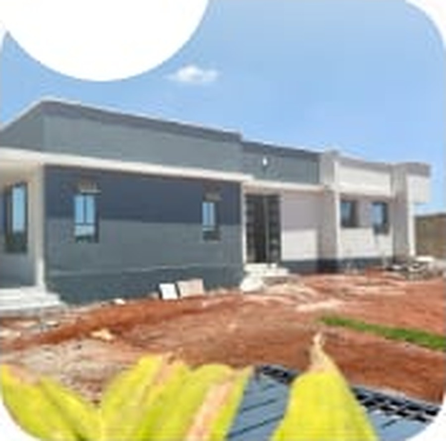
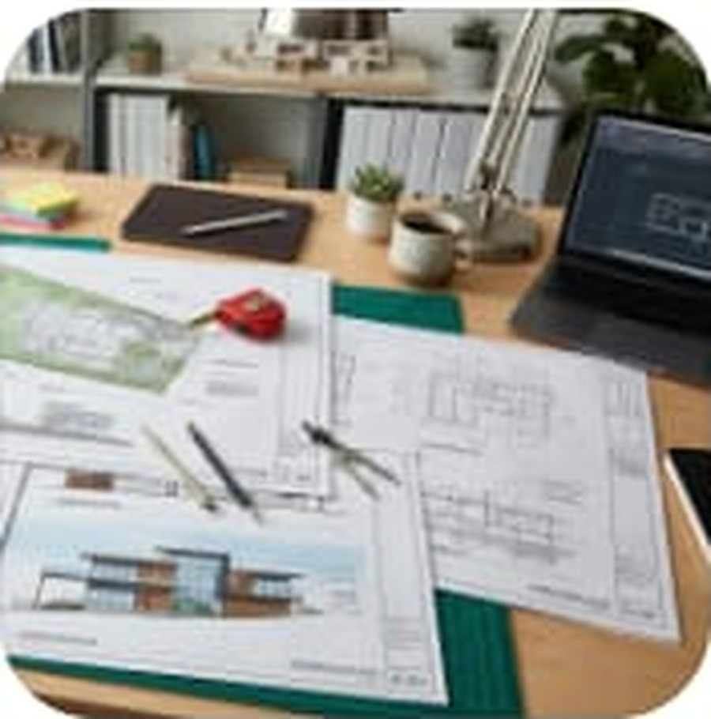
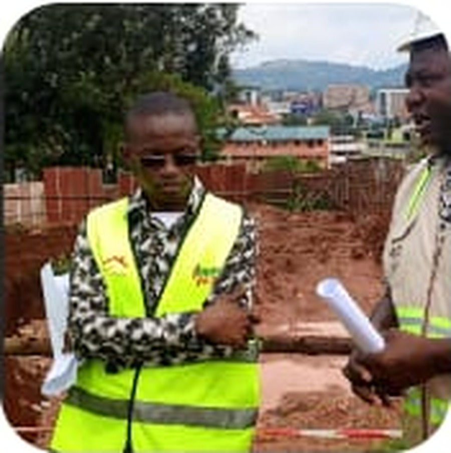
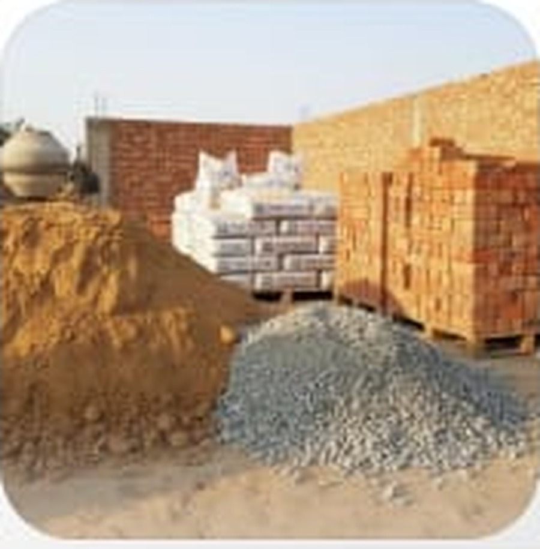

Building back home should not mean managing everything from another country.
If you live abroad, distance can make site visits, material purchases, labour coordination and day-to-day decisions difficult. Primebuild is structured around keeping you informed while the work continues on the ground in Kenya.
One point of coordination
Keep project communication organised instead of chasing different people for updates on materials, labour and site activities.
Visibility from a distance
Receive agreed progress information such as photos, videos, work completed, challenges and next steps.
Practical project support
Get support coordinating construction activities, materials, labour and relevant professionals within the agreed project scope.
From the first conversation to project close-out.
Primebuild can support the practical side of your residential project while you remain abroad. The exact scope is agreed for each project.
- ✓House planning & consultation
Clarify your building needs, project scope, drawings and information required before work begins. - ✓Cost estimation (BOQs)
Building cost discussions and estimates to support informed budget decisions. - ✓Construction coordination & supervision
Coordinate agreed activities with the relevant site team and professionals. - ✓Materials & labour coordination
Support purchasing, delivery and labour arrangements within the agreed scope. - ✓Progress monitoring & reporting
Photos, videos, work completed, issues and planned next steps.
A clear process for clients who cannot be on site every day.
The process can be adapted to the size and stage of your project.
04 — Client review
Receive updates, review progress and discuss decisions that require your input.
05 — Handover & close-out
Work toward completion, documentation and handover according to the agreed project scope.
Construction work, materials and homes.
These images illustrate the type of residential work and coordination Primebuild supports. As the portfolio grows, they will be replaced with original project photographs.




Designed around the real stress points of building from abroad.
Building in Kenya while you're abroad?
Tell us where you are, where the project is, what you want to build and what stage you are at. We'll start with a conversation about the support you need.